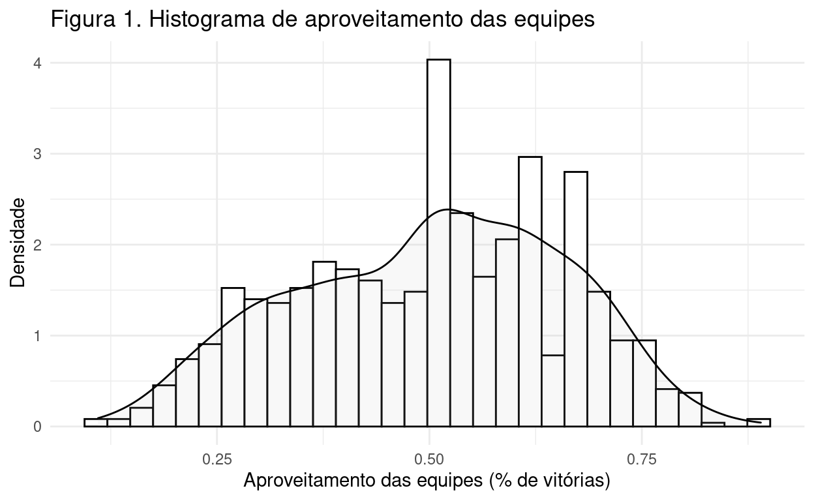
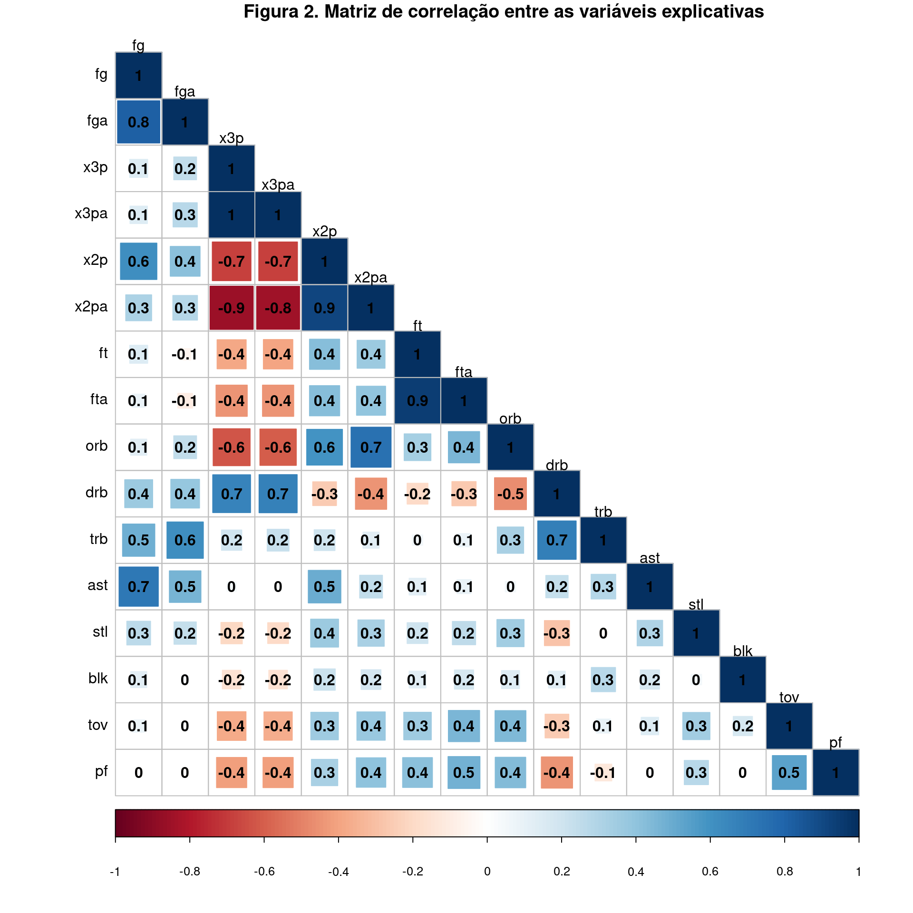
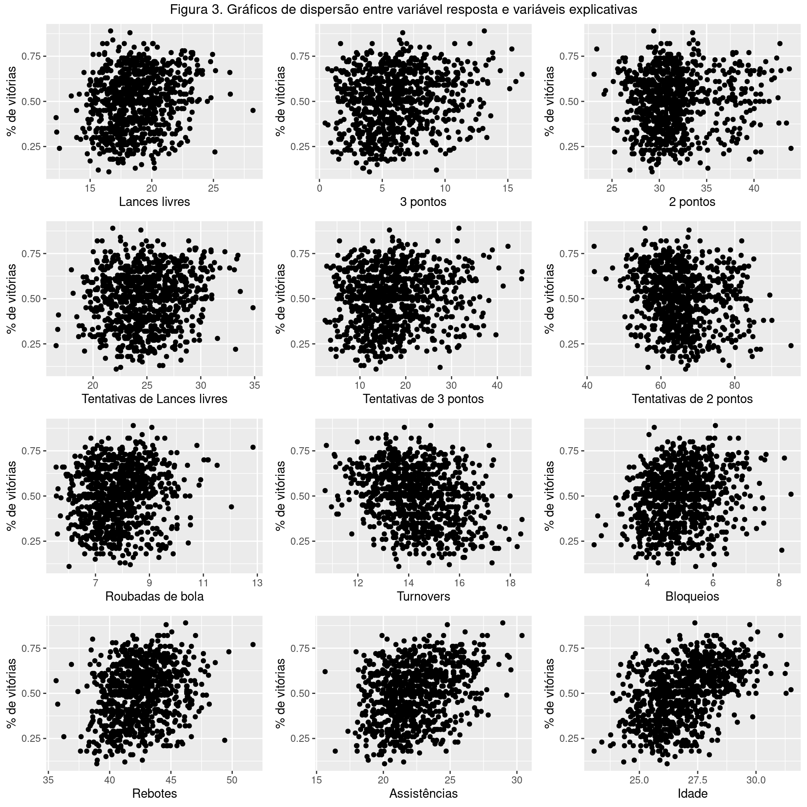
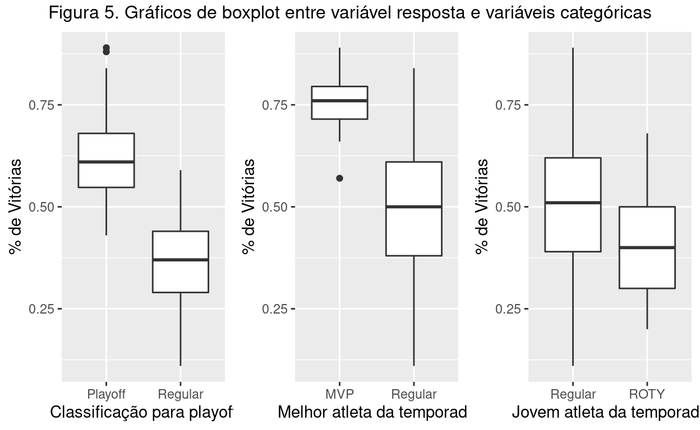
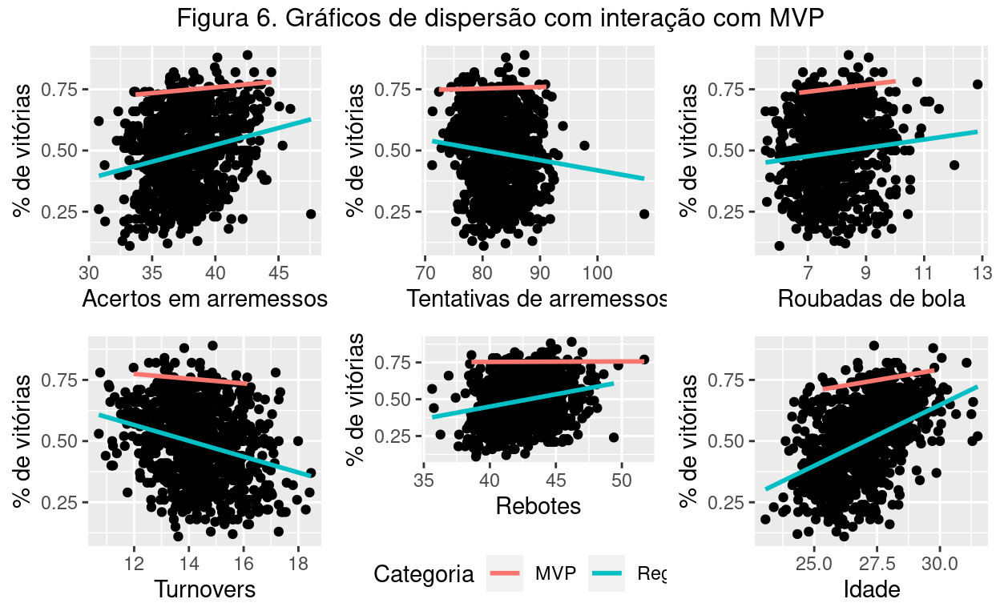
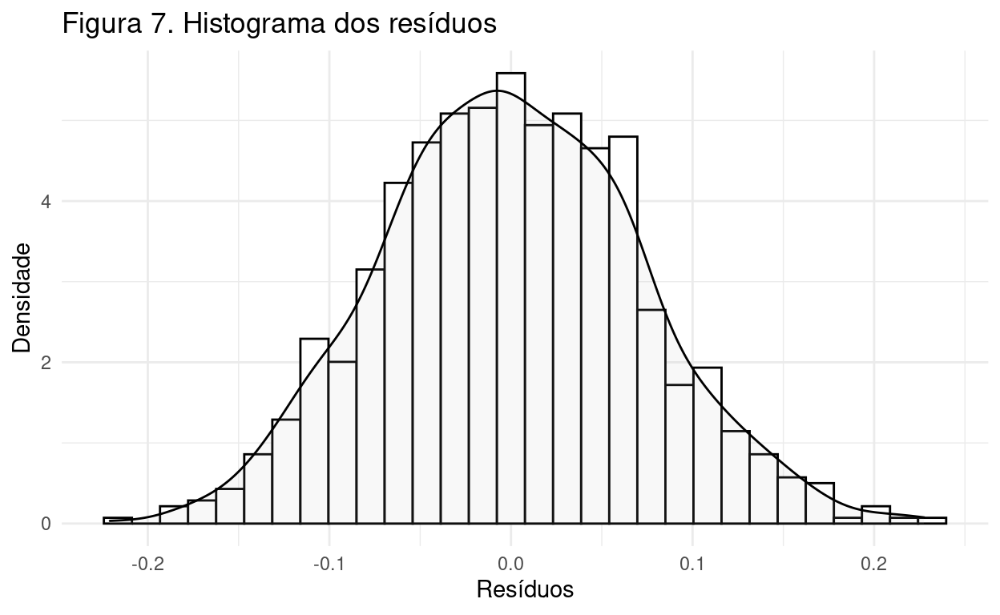

TCC em Regressão Linear - curso-R.
A NBA é uma das ligas esportivas mais competitivas do Mundo. O basquete - esporte não tão popular em outros países - faz grande sucesso na região norte das Américas. Além de todo grande investimento e estrutura, a liga também tem uma forte influência dos números. Isso é facilmente notado pelos fãs, pois, em todo jogo, é possível observar a divulgação dos dados históricos e da partida em si. Para quem trabalha com dados, isso se torna ainda mais atrativo.
Dado esse contexto, a principal motivação neste trabalho está, exatamente, em responder questões sobre a forma que as estatísticas do jogo podem (ou não) exercer efeitos sobre os resultados. Para isso, utilizarei regressão linear múltipla para análise das influências das variáveis sobre a variável resposta “teamaprov” - desempenho e aproveitamento das equipes ao longo das temporadas. Pretendo, também, aproveitar das técnicas de interações para aprofundar a análise entre algumas variáveis categóricas - como a separação entre o melhor atleta da temporada e jogadores regulares, o jovem da temporada e os atletas regulares e assim por diante.
Para o trabalho, utilizarei a base de dados denominada “nbadb”. Esse conjunto de informações foi extraído, utilizando técnicas de WebScraping, do portal “basketball-reference”, que organiza um grande acervo de dados sobre o basquete estadunidense. Trata-se de informações das temporadas completas da NBA - princial liga de basquete dos Estados Unidos. Ou seja, contém informações da temporada regular e de playoffs. Para este trabalho, utilizei dados das últimas 30 temporadas (de 1990 até 2020), desconsiderando possíveis desvios contextuais de cada competição (por exemplo, temporadas que tiveram menos jogos, menos participantes e etc.). A base conta com 903 observações e 29 variáveis. Cada linha da base representa os dados de uma equipe em determinada temporada. As variáveis representam estatísticas de jogo das equipes (arremessos, bloqueios, roubadas de bola, faltas e etc.).
A tabela abaixo sumariza os dados descritivos para cada uma das variáveis citadas acima:
sumarizacao_nbadb <- nbadb %>%
dplyr::select(where(is.numeric)) %>%
tidyr::pivot_longer(cols = everything()) %>%
dplyr::group_by(name) %>%
dplyr::summarise_at("value",
list(
minimo = ~min(.),
Q1 = ~quantile(., 0.25),
med = ~median(.),
media = ~mean(.),
Q3 = ~quantile(., 0.75),
maximo = ~max(.),
desvio = ~sd(.))) %>%
dplyr::mutate_if(is.numeric,
format,
digits = 3,
nsmall = 2)
colnames(sumarizacao_nbadb) <- c('Var', 'Mín', 'Q1', 'Mediana',
'Média', 'Q3', 'Máx',
'Des. Pad.')
kbl(sumarizacao_nbadb,
booktabs = T,
caption = 'Tabela 1. Estatísticas descritivas das variáveis da base',
longtable = F) %>%
kable_styling(position = 'center',
latex_options = c("striped", "hold_position"))
| Var | Mín | Q1 | Mediana | Média | Q3 | Máx | Des. Pad. |
|---|---|---|---|---|---|---|---|
| age | 23.06 | 25.88 | 26.78 | 26.88 | 27.81 | 31.50 | 1.371 |
| ast | 15.64 | 20.82 | 22.17 | 22.41 | 23.87 | 30.38 | 2.272 |
| blk | 2.38 | 4.34 | 4.90 | 4.98 | 5.52 | 8.37 | 0.883 |
| drb | 24.93 | 29.09 | 30.37 | 30.65 | 31.95 | 42.23 | 2.294 |
| fg | 30.78 | 35.95 | 37.39 | 37.71 | 39.32 | 47.57 | 2.551 |
| fga | 71.22 | 79.73 | 82.38 | 82.68 | 85.55 | 108.15 | 4.075 |
| ft | 12.24 | 17.23 | 18.57 | 18.76 | 20.11 | 28.21 | 2.169 |
| fta | 16.57 | 22.98 | 24.68 | 24.90 | 26.71 | 34.85 | 2.849 |
| g | 50.00 | 82.00 | 82.00 | 80.06 | 82.00 | 82.00 | 6.508 |
| loss | 9.00 | 30.00 | 39.00 | 40.03 | 49.00 | 72.00 | 12.936 |
| mp | 240.00 | 241.22 | 241.83 | 241.77 | 242.32 | 244.98 | 0.869 |
| orb | 7.65 | 10.61 | 11.70 | 11.83 | 12.88 | 18.54 | 1.763 |
| pf | 16.59 | 20.29 | 21.50 | 21.60 | 22.84 | 28.07 | 1.899 |
| pts | 81.90 | 95.81 | 99.65 | 100.36 | 104.34 | 119.85 | 6.426 |
| season | 1990.00 | 1998.00 | 2005.00 | 2005.30 | 2013.00 | 2020.00 | 8.883 |
| stl | 5.54 | 7.16 | 7.80 | 7.86 | 8.48 | 12.84 | 1.008 |
| teamapv | 0.11 | 0.38 | 0.51 | 0.50 | 0.62 | 0.89 | 0.157 |
| tov | 10.71 | 13.42 | 14.22 | 14.31 | 15.20 | 18.46 | 1.311 |
| trb | 35.63 | 40.99 | 42.35 | 42.48 | 43.89 | 51.70 | 2.131 |
| win | 7.00 | 30.00 | 41.00 | 40.03 | 50.00 | 73.00 | 12.997 |
| x2p | 23.11 | 29.34 | 30.87 | 31.52 | 32.59 | 43.91 | 3.465 |
| x2pa | 41.90 | 60.65 | 64.32 | 65.21 | 68.32 | 95.23 | 7.461 |
| x3p | 0.45 | 4.16 | 5.93 | 6.19 | 7.74 | 16.13 | 2.766 |
| x3pa | 2.40 | 12.25 | 16.61 | 17.46 | 21.41 | 45.38 | 7.434 |
A tabela permite observar como a variável de interesse da análise (teamapv) possui um desvio padrão de 0.16, com média e mediana bem próximos (respectivamente, 0.50 e 0.51). Também é interessante observar que 25% das equipes somaram, ao menos, 89% de aproveitamento ao longo das temporadas; por outro lado, 25% da primeira faixa dos atletas esteve envolvido em um desempenho de 38% de vitórias. Essas variações respondem a um comportamento comum na liga. Há uma separação marcada entre equipes com mais e menos vitórias, pois, a liga é separada em fases. Da mesma forma, também é comum observar algumas equipes que optam por abrir mão da temporada, esperando melhores condições de escolha de atletas nos drafts das temporadas seguintes. Dessa forma, é importante observar que há uma relação direta entre a classificação na liga e vitórias.
De toda forma, Figura 1 exibe o Histograma de vitórias, facilitando a observação de uma curva normal. Assim, mesmo que existam essas nuances em classificações das equipes, é possível observar uma distribuição normal.
nbadb %>%
ggplot2::ggplot(aes(x = teamapv, y=..density..)) +
ggplot2::geom_histogram(color = "black",
fill = "white") +
geom_density(alpha= .1, fill="gray") +
ggplot2::theme_minimal() +
labs(
y = "Densidade",
x = "Aproveitamento das equipes (% de vitórias)",
title = "Figura 1. Histograma de aproveitamento das equipes"
)

Na figura abaixo (Figura 2), apresento uma matriz de correlação com as possibilidades das variáveis explicativas, recortando as estatísticas de desempenho no jogo. Por meio do gráfico, observa-se que existem variáveis explicativas com alta correlação (muitas aparecem com índice acima de 0.7). Portanto, é importante ter muita atenção com problemas de multicolinearidade. Essa correlação alta entre as variáveis já era esperada, já que, no jogo, existem movimentos que com relação clara. Por exemplo, a variável fg (acertos em arremessos) certamente estaria diretamente associada aos acertos de lances livres (ft), já que são movimentos semelhantes na partida.
#Organiza a tabela para montar a correlação
cor_nba <- nbadb %>%
dplyr::select(
-c(age, pts, mp, g, win, loss, season, mvp, roty, teamapv)
) %>%
dplyr::select(
where(is.numeric)
)
#Cria a correlação
cor_nba <- round(cor(cor_nba), 2)
#Plota a correlação entre as variáveis numéricas
corrplot::corrplot(cor_nba,
method = "square",
type = "lower",
addCoef.col = "black",
number.digits = 1,
tl.col = "black",
tl.srt = 0,
title = "
Figura 2. Matriz de correlação entre as variáveis explicativas")

Dessa forma, para observar a relação da variável resposta com as outras variáveis, decidi, através da observação das estatísticas descritivas e em relação ao interesse inicial da hipótese de pesquisa, observar algumas variáveis em específico: acertos em arremessos e tentativas de arremessos (livres(ft e fta), de três pontos (x3p e x3pa), de dois pontos (x2p e x2pa)); roubadas de bola (stl); turnovers (tov); bloqueios (blk), rebotes (trb) e assistências (ast). Também incrementei a análise para média de idade (age) das equipes. Essas opções foram definidas por conterem dados das particularidades do jogo e não necessariamente um indicador que sumariza desempenhos dos atletas (como ações defensivas e ofensivas).
A Figura 3 ajuda a analisar a relação dois a dois entre a variável resposta e às variáveis explicativas selecionadas.
graph1 <- nbadb %>%
ggplot2::ggplot(aes(y = teamapv, x = ft)) +
ggplot2::geom_point() +
labs(
x = "Lances livres",
y = "% de vitórias"
)
graph2 <- nbadb %>%
ggplot2::ggplot(aes(y = teamapv, x = x3p)) +
ggplot2::geom_point() +
labs(
x = "3 pontos",
y = "% de vitórias"
)
graph3 <- nbadb %>%
ggplot2::ggplot(aes(y = teamapv, x = x2p)) +
ggplot2::geom_point() +
labs(
x = "2 pontos",
y = "% de vitórias"
)
graph4 <- nbadb %>%
ggplot2::ggplot(aes(y = teamapv, x = fta)) +
ggplot2::geom_point() +
labs(
x = "Tentativas de Lances livres",
y = "% de vitórias"
)
graph5 <- nbadb %>%
ggplot2::ggplot(aes(y = teamapv, x = x3pa)) +
ggplot2::geom_point() +
labs(
x = "Tentativas de 3 pontos",
y = "% de vitórias"
)
graph6 <- nbadb %>%
ggplot2::ggplot(aes(y = teamapv, x = x2pa)) +
ggplot2::geom_point() +
labs(
x = "Tentativas de 2 pontos",
y = "% de vitórias"
)
graph7 <- nbadb %>%
ggplot2::ggplot(aes(y = teamapv, x = stl)) +
ggplot2::geom_point() +
labs(
x = "Roubadas de bola",
y = "% de vitórias"
)
graph8 <- nbadb %>%
ggplot2::ggplot(aes(y = teamapv, x = tov)) +
ggplot2::geom_point() +
labs(
x = "Turnovers",
y = "% de vitórias"
)
graph9 <- nbadb %>%
ggplot2::ggplot(aes(y = teamapv, x = blk)) +
ggplot2::geom_point() +
labs(
x = "Bloqueios",
y = "% de vitórias"
)
graph10 <- nbadb %>%
ggplot2::ggplot(aes(y = teamapv, x = trb)) +
ggplot2::geom_point() +
labs(
x = "Rebotes",
y = "% de vitórias"
)
graph11 <- nbadb %>%
ggplot2::ggplot(aes(y = teamapv, x = ast)) +
ggplot2::geom_point() +
labs(
x = "Assistências",
y = "% de vitórias"
)
graph12 <- nbadb %>%
ggplot2::ggplot(aes(y = teamapv, x = age)) +
ggplot2::geom_point() +
labs(
x = "Idade",
y = "% de vitórias"
)
gridExtra::grid.arrange(top = "Figura 3. Gráficos de dispersão entre variável resposta e variáveis explicativas",
graph1,
graph2,
graph3,
graph4,
graph5,
graph6,
graph7,
graph8,
graph9,
graph10,
graph11,
graph12,
ncol = 3,
nrow = 4)

Observando os gráficos de dispersão das variáveis explicativas em relação à variável resposta, podemos notar um ponto importante: visualmente, pode-se dizer que existem algumas relações lineares. Mesmo que de forma bastante subjetiva, é possível ter uma primeira análise de que essas variáveis podem surtir efeitos sobre o desempenho das equipes na temporada. Assim, chego a um limite da compreensão visual da relação dos dados. Necessitando, assim, um aprofundamento para a modelagem.
Dessa forma, realizei o primeiro teste de regressão utilizando a forma mais simples de regressão múltipla. Por isso, optei por analisar as variáveis através do modelo completo de regressão. No caso, observei as estatísticas das ações de jogo como variáveis explicativas da variável resposta aproveitamento.
No caso, a fórmula ficou da seguinte maneira:
teamapv = β0 + β1ft + β2fta + β3x3p + β4x3pa + β5x2p + β6x2pa + β7stl + β8tov + β9blk + β10trb + β11ast + β12age + εi
O retorno da fórmula pode ser visto na Tabela 2.
modelo_nba <- nbadb %>%
dplyr::select(
c(teamapv, ft, fta, x3p, x3pa, x2p, x2pa, stl, tov, blk, trb, ast, age)
)
#Organiza a tabela para montar a correlação
modelo_nba <- lm(teamapv ~ ., data = modelo_nba)
summary(modelo_nba) %>%
xtable::xtable() %>%
kable(caption = "Tabela 2. Regressão múltipla com as variáveis das equipes",
booktabs = T, align = "c",longtable = T) %>%
kable_styling(position = 'center',
latex_options = c("striped", "hold_position"))
| Estimate | Std. Error | t value | Pr(>|t|) | |
|---|---|---|---|---|
| (Intercept) | 0.0667888 | 0.0903777 | 0.7389969 | 0.4601037 |
| ft | 0.0121260 | 0.0031707 | 3.8243588 | 0.0001403 |
| fta | -0.0055713 | 0.0025952 | -2.1467713 | 0.0320811 |
| x3p | 0.1097854 | 0.0071076 | 15.4462847 | 0.0000000 |
| x3pa | -0.0660681 | 0.0026554 | -24.8802759 | 0.0000000 |
| x2p | 0.0462030 | 0.0022500 | 20.5343469 | 0.0000000 |
| x2pa | -0.0456323 | 0.0014251 | -32.0206631 | 0.0000000 |
| stl | 0.0584270 | 0.0026520 | 22.0314042 | 0.0000000 |
| tov | -0.0502939 | 0.0021138 | -23.7936349 | 0.0000000 |
| blk | 0.0052190 | 0.0027441 | 1.9018826 | 0.0575091 |
| trb | 0.0473068 | 0.0015668 | 30.1935183 | 0.0000000 |
| ast | 0.0045753 | 0.0015088 | 3.0323682 | 0.0024968 |
| age | 0.0171241 | 0.0018851 | 9.0840307 | 0.0000000 |
O modelo generalizado, tendo como preditoras as variáveis escolhidas acima, apresentou valores significativos para quase todas as variáveis. Somente a variável de tentativas de arremessos em tiro livre, bloqueios e assistências por jogo apresentaram significância menor. As demais variáveis, apresentaram significância, com valor-p < 0,05. Cabe ressaltar, também, que o valor do R2 pode ser considerado um bom valor. 0.81 para o R22 e para o R2 ajustado, indicando uma boa aderência deste modelo.
Entretanto, por se tratar de lances de jogo - e como já observado com a utilização da correlação na análise exploratória - pode ser que exista algum problema de multicolinearidade. Por isso, utilizei o vif para observar esse comportamento.
vif1 <- car::vif(modelo_nba)
kbl(vif1,
booktabs = T,
longtable = T,
col.names = c('VIF')) %>%
kable_styling(position = 'center',
latex_options = c("striped",
"hold_position"))
| VIF | |
|---|---|
| ft | 9.976623 |
| fta | 11.527646 |
| x3p | 81.501143 |
| x3pa | 82.166519 |
| x2p | 12.814557 |
| x2pa | 23.835844 |
| stl | 1.505386 |
| tov | 1.619725 |
| blk | 1.238009 |
| trb | 2.350897 |
| ast | 2.478891 |
| age | 1.407552 |
Como é possível observar, algumas variáveis apresentaram VIF acima do adequado (acima de 5). No caso, as variáveis de tentativas de arremessos são valores significativos. Isso, possivelmente, ocorre porque as tentativas de arremesso são movimentos parecidos, independentemente do tipo de arremesso (na zona dois ou três pontos, por exemplo). Para resolver isso, testarei um novo modelo utilizando a variável de arremessos em geral (fg e fga) no lugar dos arremessos específicos. O objetivo dessa busca é encontrar um modelo reduzido para a regressão.
Dessa maneira, o modelo reduzido pode ser representado da seguinte maneira:
teamapv = β0 + β1fg + β2fga + β3stl + β4tov + β5blk + β6trb + β9ast + β10age + εi
modelo_nba_2 <- nbadb %>%
dplyr::select(
c(teamapv, fg, fga, stl, tov, blk, trb, ast, age)
)
#Organiza a tabela para montar a correlação
modelo_nba_2 <- lm(teamapv ~ ., data = modelo_nba_2)
summary(modelo_nba_2) %>%
xtable::xtable() %>%
kable(caption = "Tabela 3. Regressão múltipla com as variáveis das equipes sem arremessos específicos",
booktabs = T, align = "c",longtable = T) %>%
kable_styling(position = 'center',
latex_options = c("striped", "hold_position"))
| Estimate | Std. Error | t value | Pr(>|t|) | |
|---|---|---|---|---|
| (Intercept) | 0.3547121 | 0.0934418 | 3.7960750 | 0.0001569 |
| fg | 0.0552572 | 0.0021212 | 26.0498535 | 0.0000000 |
| fga | -0.0502356 | 0.0013268 | -37.8628378 | 0.0000000 |
| stl | 0.0540744 | 0.0027766 | 19.4747391 | 0.0000000 |
| tov | -0.0576072 | 0.0020312 | -28.3612652 | 0.0000000 |
| blk | 0.0012081 | 0.0029335 | 0.4118497 | 0.6805483 |
| trb | 0.0485813 | 0.0015996 | 30.3700692 | 0.0000000 |
| ast | 0.0051827 | 0.0016160 | 3.2070893 | 0.0013885 |
| age | 0.0159192 | 0.0020118 | 7.9127461 | 0.0000000 |
Com esse novo modelo, foi possível perceber um ajuste na significância das variáveis, pois, agora, uma única referência para arremessos já representa e demonstra significância em relação à variável resposta. Neste caso, o valor de R2 teve uma leve queda e o erro médio dos resíduos também aumentou. Agora, temos um R22 de 0.79. Esse fato poderia ser uma preocupação na análise, pois entende-se que perdemos qualidade do modelo. Porém, avançarei com a análise, pois, as variáveis bloqueio e assistência continuam com uma baixa significância, por isso testarei um novo modelo sem a presença dessas variáveis.
Agora, o modelo se dá da seguinte maneira:
teamapv = β0 + β1fg + β2fga + β3stl + β4tov + β6trb + β7age + εi
modelo_nba_3 <- nbadb %>%
dplyr::select(
c(teamapv, fg, fga, stl, tov, trb, age)
)
#Organiza a tabela para montar a correlação
modelo_nba_3 <- lm(teamapv ~ ., data = modelo_nba_3)
summary(modelo_nba_3) %>%
xtable::xtable() %>%
kable(caption = "Tabela 4. Regressão múltipla com as variáveis das equipes sem arremessos específicos, bloqueios e assistências",
booktabs = T, align = "c",longtable = T) %>%
kable_styling(position = 'center',
latex_options = c("striped", "hold_position"))
| Estimate | Std. Error | t value | Pr(>|t|) | |
|---|---|---|---|---|
| (Intercept) | 0.3238515 | 0.0926737 | 3.494534 | 0.0004982 |
| fg | 0.0595506 | 0.0016759 | 35.534190 | 0.0000000 |
| fga | -0.0511374 | 0.0012684 | -40.316596 | 0.0000000 |
| stl | 0.0554290 | 0.0027548 | 20.121090 | 0.0000000 |
| tov | -0.0569510 | 0.0020278 | -28.085579 | 0.0000000 |
| trb | 0.0489035 | 0.0015124 | 32.335775 | 0.0000000 |
| age | 0.0171082 | 0.0019709 | 8.680493 | 0.0000000 |
Com isso, o terceiro modelo teve um aumento no R2 (0.79) e uma redução nos erros em relação ao modelo 2. Ao mesmo passo, todas as variáveis demonstraram significância de efeito. Dessa forma, consideraremos o modelo 3 como o mais adequado para compreensão do aproveitamento dos times.
Para atestar que não há mais problemas com as variáveis, retorno ao VIF, tentando evitar problemas de multicolinearidade que apareceram nos modelos anteriores.
vif2 <- car::vif(modelo_nba_3)
kbl(vif2,
booktabs = T,
longtable = T,
col.names = c('VIF')) %>%
kable_styling(position = 'center',
latex_options = c("striped",
"hold_position"))
| VIF | |
|---|---|
| fg | 3.242289 |
| fga | 4.739400 |
| stl | 1.366855 |
| tov | 1.254337 |
| trb | 1.843204 |
| age | 1.294714 |
Assim, além do modelo ganhar em aderência, com um leve aumento nos valores de R2, mantendo a significância para todas as variáveis, também apresenta índices VIF abaixo de 5.
Como foi tratado sobre desempenho das equipes ao longo das temporadas, é importante ressanter que alguns fatores podem influenciar tais dados. Na NBA, temos a separação entre fases da liga: os equipes que jogam somente a temporada regular e os que se classificam para os playoffs. Consequentemente, isso consiste em mais jogos e, consequentemente, mais vitórias - pois isso é definido através de um ranking dos melhores clubes das conferências. Da mesma maneira, também existem outras premiações que também indicam qualidade e podem indicar resultados. Trata-se das premiações de melhor jogador da temporada (MVP) e melhor jovem da temporada (ROTY). É importante considerar esses itens, pois, em geral, tende-se a premiar os jogadores mais vencedores.
Por isso, na Figura 5, utilizei boxplot para observar se há alguma diferença nos desempenhos das equipes dentro de cada uma das categorias citadas acima.
graph13 <- nbadb %>%
ggplot2::ggplot(aes(x = teamapv, y = playoff)) +
ggplot2::geom_boxplot() +
ggplot2::coord_flip() +
labs(
x = "% de Vitórias",
y = "Classificação para playoff"
)
graph14 <- nbadb %>%
ggplot2::ggplot(aes(x = teamapv, y = mvp)) +
ggplot2::geom_boxplot() +
ggplot2::coord_flip() +
labs(
x = "% de Vitórias",
y = "Melhor atleta da temporada"
)
graph15 <- nbadb %>%
ggplot2::ggplot(aes(x = teamapv, y = roty)) +
ggplot2::geom_boxplot() +
ggplot2::coord_flip() +
labs(
x = "% de Vitórias",
y = "Jovem atleta da temporada"
)
gridExtra::grid.arrange(top = "Figura 5. Gráficos de boxplot entre variável resposta e variáveis categóricas",
graph13,
graph14,
graph15,
ncol = 3,
nrow = 1)

O que observa-se, através da análise visual, é que há uma diferença de mediana entre as equipes que possuem os melhores jogadores da temporada. Para os casos dos atletas jovens da temporada, isso não se aplica. Assim, a fim de validar os testes, criarei outro modelo. Utilizarei, assim, o modelo reduzido encontrado no tópico anterior, interagindo com a variável de MVP (mvp).
É importante ressaltar que o caso dos playoffs pode gerar uma compreensão um tanto quanto ambígua. Isso, pois, como dito, a definição das equipes que vão aos playoffs depende diretamente da sua classificação e, consequentemente, sua quantidade de vitórias. Por isso, acredito que seja uma relação pré-estabelecida, que pode enviesar o modelo.
A tabela 5 exibe a utilização do modelo reduzido com a interação com a variável MVP.
modelo_nba_4 <- nbadb %>%
dplyr::mutate(
mvp = forcats::fct_relevel(mvp, "Regular")) %>%
dplyr::select(
c(teamapv, fg, fga, stl, tov, trb, age, mvp)
)
#Organiza a tabela para montar a correlação
modelo_nba_4 <- lm(teamapv ~ . * mvp, data = modelo_nba_4)
summary(modelo_nba_4) %>%
xtable::xtable() %>%
kable(caption = "Tabela 5. Modelo reduzido com interação com a variável mvp",
booktabs = T, align = "c",longtable = T) %>%
kable_styling(position = 'center',
latex_options = c("striped", "hold_position"))
| Estimate | Std. Error | t value | Pr(>|t|) | |
|---|---|---|---|---|
| (Intercept) | 0.3360315 | 0.0930851 | 3.6099403 | 0.0003234 |
| fg | 0.0587293 | 0.0017101 | 34.3417769 | 0.0000000 |
| fga | -0.0505881 | 0.0012923 | -39.1472148 | 0.0000000 |
| stl | 0.0553006 | 0.0027549 | 20.0736413 | 0.0000000 |
| tov | -0.0565401 | 0.0020299 | -27.8530427 | 0.0000000 |
| trb | 0.0484087 | 0.0015463 | 31.3061365 | 0.0000000 |
| age | 0.0166533 | 0.0019718 | 8.4455740 | 0.0000000 |
| mvpMVP | -0.0731252 | 0.5434656 | -0.1345534 | 0.8929954 |
| fg:mvpMVP | -0.0338796 | 0.0123795 | -2.7367489 | 0.0063288 |
| fga:mvpMVP | 0.0332898 | 0.0100547 | 3.3108567 | 0.0009676 |
| stl:mvpMVP | -0.0346271 | 0.0207027 | -1.6725894 | 0.0947600 |
| tov:mvpMVP | 0.0290985 | 0.0158390 | 1.8371412 | 0.0665227 |
| trb:mvpMVP | -0.0342176 | 0.0098739 | -3.4654539 | 0.0005547 |
| age:mvpMVP | 0.0027886 | 0.0128617 | 0.2168124 | 0.8284043 |
A Figura 6 representam os gráficos com a presença das interações pela variável categórica MVP. Isso ajuda a compreender o efeito dessa variável no restante da análise.
graph16 <- nbadb %>%
ggplot2::ggplot(aes(y = teamapv, x = fg)) +
ggplot2::geom_point() +
geom_smooth(method = lm, aes(colour = factor(mvp)), se = FALSE) +
labs(
x = "Acertos em arremessos",
y = "% de vitórias"
) +
theme(legend.position = "none")
graph17 <- nbadb %>%
ggplot2::ggplot(aes(y = teamapv, x = fga)) +
ggplot2::geom_point() +
geom_smooth(method = lm, aes(colour = factor(mvp)), se = FALSE) +
labs(
x = "Tentativas de arremessos",
y = "% de vitórias"
) +
theme(legend.position = "none")
graph18 <- nbadb %>%
ggplot2::ggplot(aes(y = teamapv, x = stl)) +
ggplot2::geom_point() +
geom_smooth(method = lm, aes(colour = factor(mvp)), se = FALSE) +
labs(
x = "Roubadas de bola",
y = "% de vitórias"
) +
theme(legend.position = "none")
graph19 <- nbadb %>%
ggplot2::ggplot(aes(y = teamapv, x = tov)) +
ggplot2::geom_point() +
geom_smooth(method = lm, aes(colour = factor(mvp)), se = FALSE) +
labs(
x = "Turnovers",
y = "% de vitórias"
) +
theme(legend.position = "none")
graph20 <- nbadb %>%
ggplot2::ggplot(aes(y = teamapv, x = trb)) +
ggplot2::geom_point() +
geom_smooth(method = lm, aes(colour = factor(mvp)), se = FALSE) +
labs(
x = "Rebotes",
y = "% de vitórias",
colour = "Categoria"
) +
theme(legend.position = "bottom")
graph21 <- nbadb %>%
ggplot2::ggplot(aes(y = teamapv, x = age)) +
ggplot2::geom_point() +
geom_smooth(method = lm, aes(colour = factor(mvp)), se = FALSE) +
labs(
x = "Idade",
y = "% de vitórias"
) +
theme(legend.position = "none")
gridExtra::grid.arrange(top = "Figura 6. Gráficos de dispersão com interação com MVP",
graph16,
graph17,
graph18,
graph19,
graph20,
graph21,
ncol = 3,
nrow = 2)

Dessa forma, é importante entender o modelo com a interação com a variável MVP. O resultado do modelo manteve as signifiâncias para as variáveis do modelo otimizado. Então, podemos dizer que há efeito das variáveis explicativas na variável resposta (aproveitamento das equipes), como já fora notado anteriormente. Já sobre o efeito da variável MVP em relação às variável explicativas, podemos dizer que se aplica somente para alguns casos, como tentativas de arremessos e rebotes. Para o restante, as retas se mantiveram paralelas. Dessa forma, por mais que tenha aumentado do R22 levemente (0.80), considerarei que essa interação não é relevante para esse modelo.
Por fim, para concluir, realizarei uma análise diagnóstica do modelo, a fim de entender se esse realmente é o melhor caminho para seguir, concluindo com o que fora compreendido desse estudo.
Dessa maneira, utilizarei o modelo que pôde ser considerado como ótimo para analisa-lo.
Relembrando,
teamapv = β0 + β1fg + β2fga + β3stl + β4tov + β6trb + β7age + εi
Assim, utilizarei a análise de resíduos para observar a presença de outliers e analisar como o modelo se comportou.
A análise de resíduos ajuda a entender a presença de outliers e o comportamento dos mesmos. Observando o gráfico de qq-plot, podemos observar que a curva tende à normalidade. A núvem de resíduos e preditos também indica a normalidade e mostra como à homogeneidade na variação do que foi predicto e o que foi observado, mesmo com um leve desvio com o aumento dos valores preditos.
Na Figura 7, desenhei um histograma para observar a curva de distribuição dos resíduos. Nota-se, novamente, uma curva normal.
hist_residuals <- modelo_nba_3$residuals %>%
tibble::as_tibble()
hist_residuals %>%
ggplot2::ggplot(aes(x = value, y=..density..)) +
ggplot2::geom_histogram(color = "black",
fill = "white") +
geom_density(alpha= .1, fill="gray") +
ggplot2::theme_minimal() +
labs(
y = "Densidade",
x = "Resíduos",
title = "Figura 7. Histograma dos resíduos"
)

O teste de Shapiro-Wilk permite garantir, estatisticamente, de que há normalidade dos resíduos nesse modelo de regressão. Portanto, o valor-p do teste permite garantir esse resultado.
shapiro.test(modelo_nba_3$residuals)
Shapiro-Wilk normality test
data: modelo_nba_3$residuals
W = 0.99872, p-value = 0.7782A distância de Cook permite observar que existem outliers na base. Entretanto, o que é apontado pelo teste está dentro da compreensão das análises, visto que considera campanhas fora da curva normal, como desempenhos marcados históricamente pelos próprios desempenhos. Porém, acredito que essas campanhas podem fazer parte do jogo, já que alguns fatores não são tão controláveis (como a quantidade de arremessos, quantidade de acertos de bolas de três e etc). Dessa forma, considerarei que não há pontos influentes no modelo, aceitando os desvios como algo normal.
Há um grau de complexidade na análise desses dados, principalmente por serem dados esportivos, que mudam com alta velocidade e dependem de fatores não tão controlados (como lesões de atletas, negociações, psicológico, presença da torcida e etc.). Além disso, corre-se o risco de ser redundante, visto que certamente quanto mais perfeito seu jogo for, maior a chance de vencer você terá. Entretanto, acredito que foi possível mensurar algumas variáveis que influenciam em nossa variável resposta: o desempenho da equipe ao longo da temporada.
Observando todos os dados do jogo, foi possível reduzir uma fórmula que melhor representava efeitos no desempenho da equipe. Assim, chegamos à conclusão que o modelo que considerava acertos e tentativas de arremessos em geral por jogo, roubadas de bolas por jogo, turnovers por jogo, rebotes por jogo e média de idade da equipe é a melhor forma para entender a relação linear com o aproveitamento da equipe.
O modelo não levou em consideração as interações, visto que não foi possível observar ganhos significativos com a inclusão de alguns testes. Observei se seria teria muito efeito ter a presença do MVP da temporada ou não, porém, o retorno não foi significativo para ser levado em consideração.
Por fim, considero que essa análise mereça um estudo mais aprofundado e detalhado, de forma que, talvez, seja necessário realizar novos testes, utilizando novas técnicas. Porém, a regressão linear permitiu observar que algumas variáveis podem surtir efeito se a equipe eleva seu desempenho no jogo.
Para concluir, a expressão do modelo ajustado é a seguinte:
aproveitamento = 0.323852 + 0.059551fg - 0.051137fga + 0.05542stl - 0.056951tov + 0.048903trb + 0.017108age
Esse modelo teve um R22 de 0.79, com um erro médio de 0.071 e significância para todas as variáveis.
summary(modelo_nba_3)
Call:
lm(formula = teamapv ~ ., data = modelo_nba_3)
Residuals:
Min 1Q Median 3Q Max
-0.220868 -0.046998 -0.002114 0.049579 0.227538
Coefficients:
Estimate Std. Error t value Pr(>|t|)
(Intercept) 0.323852 0.092674 3.495 0.000498 ***
fg 0.059551 0.001676 35.534 < 2e-16 ***
fga -0.051137 0.001268 -40.317 < 2e-16 ***
stl 0.055429 0.002755 20.121 < 2e-16 ***
tov -0.056951 0.002028 -28.086 < 2e-16 ***
trb 0.048903 0.001512 32.336 < 2e-16 ***
age 0.017108 0.001971 8.680 < 2e-16 ***
---
Signif. codes: 0 '***' 0.001 '**' 0.01 '*' 0.05 '.' 0.1 ' ' 1
Residual standard error: 0.0713 on 896 degrees of freedom
Multiple R-squared: 0.7941, Adjusted R-squared: 0.7927
F-statistic: 575.9 on 6 and 896 DF, p-value: < 2.2e-16